1. Pendahuluan
Selamat datang di panduan penggunaan Content Management System (CMS) untuk SDS Taman Harapan. Sistem ini dirancang untuk memudahkan administrator dan staff sekolah dalam mengelola konten website serta data operasional sekolah secara digital.
Fitur Utama
- Manajemen Konten Website: Kelola halaman beranda, tentang kami, program, berita, dan pendaftaran siswa baru (PPDB)
- Manajemen Akademik: Data siswa, rapor digital, mata pelajaran, dan tahun akademik
- Manajemen Keuangan: Invoice SPP, proyeksi cash flow, dan analisis pembayaran
- Galeri Media: Foto, video, dan dokumentasi kegiatan sekolah
- Pengaturan: Profil sekolah dan manajemen pengguna
Level Akses Pengguna
🔐 Peran dan Hak Akses
- Super Admin: Akses penuh ke semua fitur termasuk manajemen pengguna
- Admin: Akses ke semua fitur operasional kecuali beberapa pengaturan sensitif
- Editor: Dapat mengedit konten website dan data akademik
- Viewer: Hanya dapat melihat data tanpa kemampuan edit
2. Cara Login ke Admin Panel
Langkah-langkah Login
- Buka browser (Chrome, Firefox, atau Edge) dan kunjungi alamat website sekolah
- Klik tombol "Akses Admin" di halaman utama atau langsung kunjungi
/admin/login - Masukkan email dan password yang telah diberikan oleh administrator
- Klik tombol "Masuk"
- Jika kredensial benar, Anda akan diarahkan ke halaman Dashboard
Tampilan Halaman Login
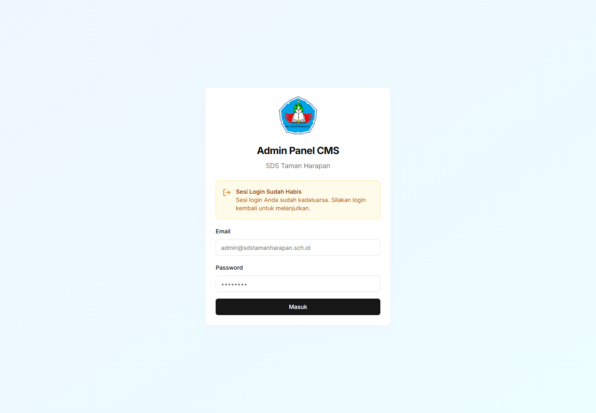
Gambar: Halaman Login Admin Panel CMS
📌 Petunjuk Elemen Halaman Login:
- Logo Sekolah — Logo SDS Taman Harapan di bagian atas form
- Field Email — Masukkan email admin Anda (contoh: admin@sdstamanharapan.sch.id)
- Field Password — Masukkan password akun Anda
- Tombol "Masuk" — Klik untuk login ke sistem
⚠️ Perhatian
Jika akun Anda dinonaktifkan, Anda akan melihat pesan "Akun Dinonaktifkan". Hubungi administrator untuk mengaktifkan kembali akun Anda.
Lupa Password?
Saat ini fitur reset password belum tersedia. Silakan hubungi administrator (Super Admin) untuk mereset password Anda.
Logout
Untuk keluar dari sistem, klik nama Anda di sidebar kanan bawah, lalu klik tombol "Keluar".
3. Dashboard
Dashboard adalah halaman utama yang menampilkan ringkasan informasi penting tentang sekolah dalam bentuk kartu statistik.
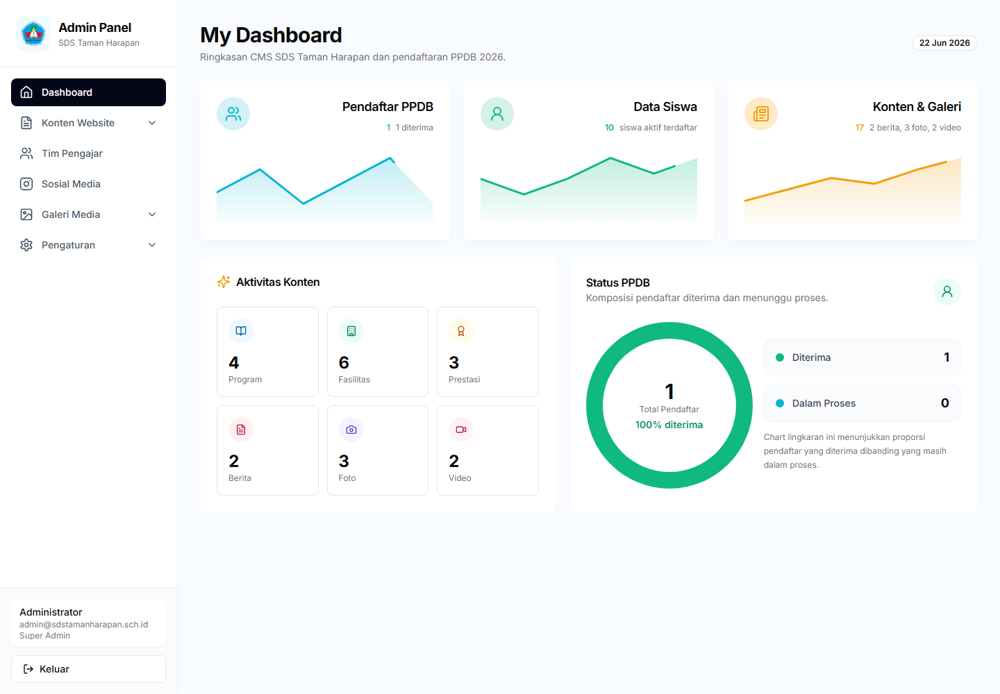
Gambar: Halaman Dashboard Admin Panel
📌 Petunjuk Elemen Dashboard:
- Sidebar (kiri) — Menu navigasi utama: Dashboard, Konten Website, Akademik, Keuangan, Galeri Media, Pengaturan. Klik untuk membuka masing-masing bagian
- Kartu Statistik (atas) — Menampilkan jumlah Pendaftar PPDB, Data Siswa, dan Konten & Galeri secara ringkas
- Status PPDB (kanan) — Chart lingkaran komposisi pendaftar yang diterima vs dalam proses
- Aktivitas Konten (bawah) — Jumlah Program, Fasilitas, Prestasi, Berita, Foto, dan Video
- Info Pengguna (bawah sidebar) — Menampilkan nama, email, dan peran Anda. Tombol "Keluar" untuk logout
Informasi yang Ditampilkan
📊 Kartu Statistik
- Total Siswa: Jumlah siswa aktif saat ini
- Pendaftaran Baru: Jumlah pendaftaran PPDB yang masuk
- Pembayaran SPP: Statistik pembayaran bulan ini
- Berita Terpublikasi: Jumlah berita yang sudah dipublikasikan
Navigasi
Gunakan sidebar di sebelah kiri untuk mengakses berbagai fitur. Menu yang tersedia:
- Dashboard
- Konten Website (dengan submenu)
- Akademik (dengan submenu)
- Keuangan
- Galeri Media (dengan submenu)
- Pengaturan (dengan submenu)
💡 Tips
Di bagian bawah sidebar, Anda dapat melihat nama pengguna dan peran Anda saat ini.
4. Manajemen Konten Website
Bagian ini memungkinkan Anda mengelola semua konten yang tampil di website publik sekolah.
4.1 Beranda (Homepage)
Halaman beranda adalah halaman pertama yang dilihat pengunjung website.
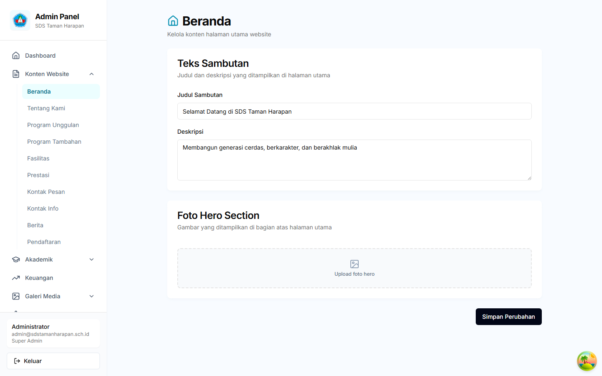
Gambar: Halaman Pengaturan Konten Beranda
📌 Petunjuk Elemen:
- Sidebar → Konten Website → Beranda — Klik untuk membuka halaman pengaturan konten beranda
- Form Editor — Edit teks, gambar, dan pengaturan hero section, sambutan, dan CTA
- Tombol "Simpan" — Klik untuk menyimpan perubahan konten
Yang Dapat Diedit:
- Hero Section: Judul utama, deskripsi, dan gambar banner
- Sambutan: Teks sambutan dari kepala sekolah
- Highlight Program: Program unggulan yang ditampilkan di beranda
- Call to Action: Tombol ajakan untuk mendaftar atau kontak
Cara Mengedit:
- Klik menu Konten Website → Beranda
- Klik tombol "Edit" pada bagian yang ingin diubah
- Ubah teks, gambar, atau pengaturan lainnya
- Klik "Simpan" untuk menyimpan perubahan
4.2 Tentang Kami
Halaman ini menampilkan informasi lengkap tentang sekolah.
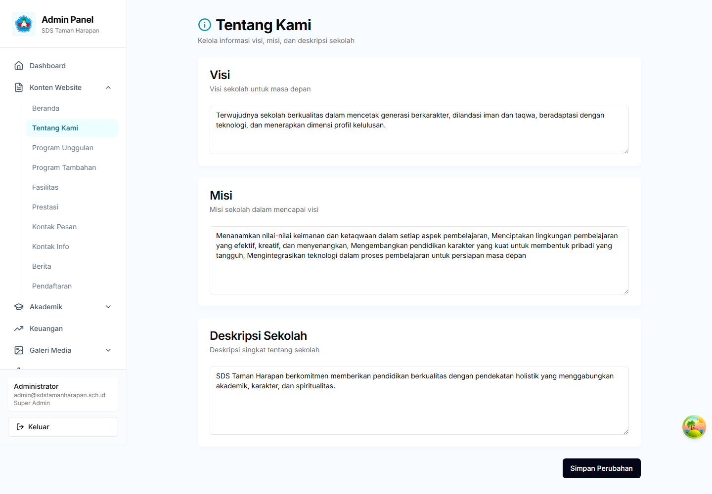
Gambar: Halaman Pengaturan Konten Tentang Kami
📌 Petunjuk Elemen:
- Sidebar → Konten Website → Tentang Kami — Klik untuk membuka halaman pengaturan konten tentang
- Tab Sections (Sejarah / Visi-Misi / Struktur / Tim) — Klik untuk berpindah antar bagian halaman tentang
- Form Editor — Edit teks, gambar, dan data untuk setiap bagian
- Tombol "Simpan" — Klik untuk menyimpan perubahan konten
Konten yang Dikelola:
- Sejarah Sekolah: Cerita pendirian dan perjalanan sekolah
- Visi dan Misi: Tujuan dan prinsip sekolah
- Struktur Organisasi: Bagan organisasi sekolah
- Tim Pengajar: Profil guru dan staff
4.3 Program Unggulan
Kelola program-program unggulan yang menjadi nilai jual sekolah.
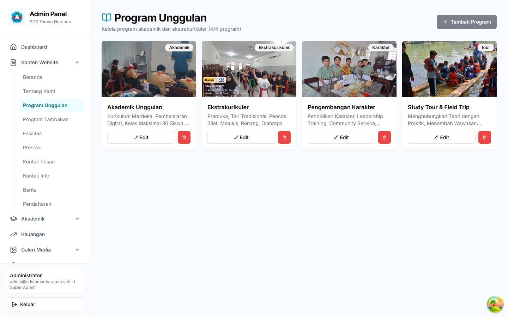
Gambar: Halaman Manajemen Program Unggulan
📌 Petunjuk Elemen:
- Sidebar → Konten Website → Program Unggulan — Klik untuk membuka halaman program
- Tombol "Tambah Program" — Klik untuk membuat program unggulan baru
- Kartu Program — Daftar program dengan icon, nama, dan deskripsi singkat
- Tombol Edit (ikon pensil) — Klik untuk mengubah detail program
- Tombol Hapus (ikon tong sampah) — Klik untuk menghapus program
Cara Menambah Program:
- Klik menu Konten Website → Program Unggulan
- Klik tombol "Tambah Program"
- Isi form:
- Nama program
- Deskripsi singkat
- Deskripsi lengkap
- Icon/gambar program
- Urutan tampilan
- Klik "Simpan"
4.4 Berita
Publikasikan berita dan pengumuman sekolah.
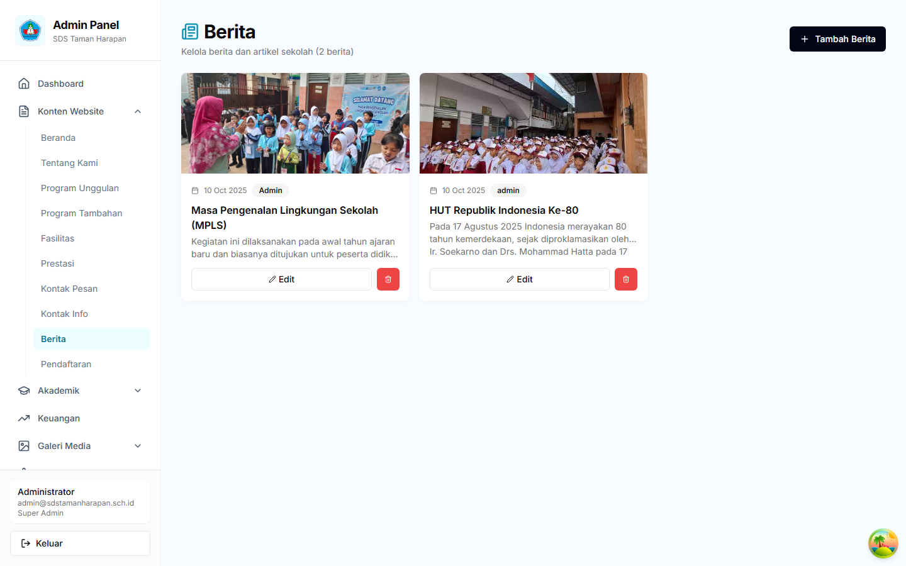
Gambar: Halaman Manajemen Berita
📌 Petunjuk Elemen:
- Tombol "Tambah Berita" — Klik untuk membuat berita baru
- Daftar Berita — Tabel berisi judul, kategori, status (Draft/Published), dan tanggal
- Tombol Edit (ikon pensil) — Klik untuk mengubah berita yang sudah ada
- Tombol Hapus (ikon tong sampah) — Klik untuk menghapus berita
Cara Membuat Berita:
- Klik menu Konten Website → Berita
- Klik tombol "Tambah Berita"
- Isi form:
- Judul: Judul berita yang menarik
- Slug: URL-friendly (otomatis dari judul)
- Ringkasan: Deskripsi singkat untuk preview
- Konten: Isi berita lengkap
- Gambar Cover: Gambar utama berita
- Kategori: Berita, Pengumuman, atau Kegiatan
- Status: Draft atau Published
- Klik "Simpan"
ℹ️ Catatan
Berita dengan status "Draft" tidak akan tampil di website publik. Ubah status menjadi "Published" untuk mempublikasikan.
4.5 Pendaftaran (PPDB)
Kelola pendaftaran peserta didik baru secara online.
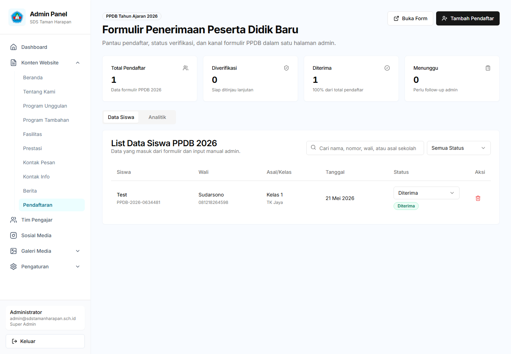
Gambar: Halaman Manajemen PPDB (Pendaftaran Siswa Baru)
📌 Petunjuk Elemen:
- Filter Status — Pilih untuk melihat pendaftar berdasarkan status: Semua, Pending, Diterima, Ditolak
- Tabel Pendaftar — Daftar semua pendaftar dengan nama, NISN, dan status
- Tombol Detail — Klik untuk melihat data lengkap pendaftar
- Ubah Status — Terima atau tolak pendaftaran dari halaman detail
- Export Data — Download data pendaftar dalam format Excel
Fitur PPDB:
- Daftar Pendaftar: Lihat semua pendaftaran yang masuk
- Filter Status: Pending, Diterima, Ditolak
- Detail Pendaftar: Informasi lengkap calon siswa
- Ubah Status: Terima atau tolak pendaftaran
- Export Data: Download data pendaftar dalam format Excel
Proses PPDB:
- Calon siswa mengisi formulir pendaftaran di website
- Admin menerima notifikasi pendaftaran baru
- Admin memverifikasi data dan dokumen
- Admin mengubah status menjadi "Diterima" atau "Ditolak"
- Siswa yang diterima dapat di-import ke data siswa
5. Manajemen Akademik
Bagian ini mengelola data siswa, rapor, dan referensi akademik lainnya.
5.1 Daftar Siswa
Kelola data seluruh siswa aktif di sekolah.
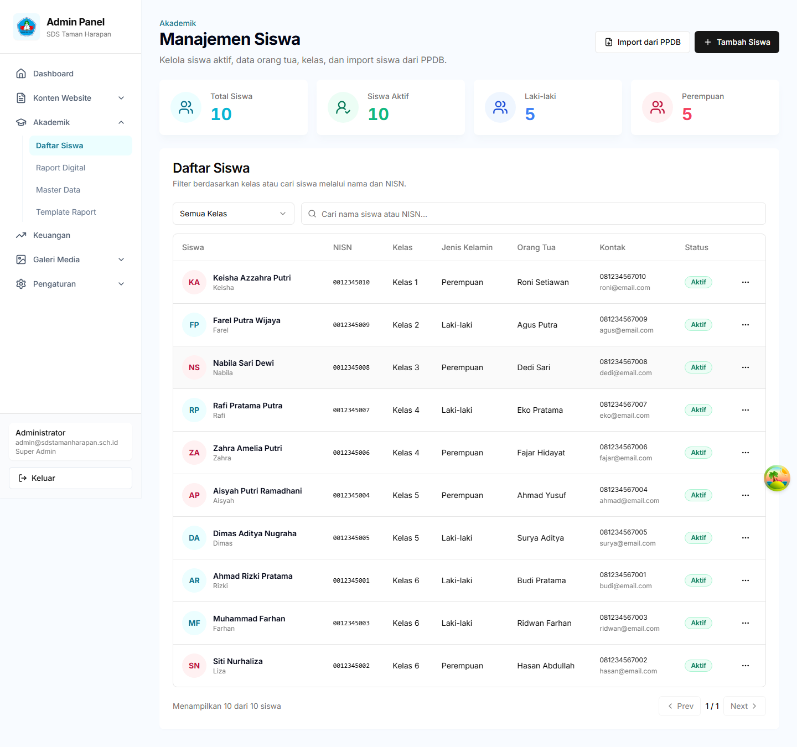
Gambar: Halaman Manajemen Siswa
📌 Petunjuk Elemen:
- Kartu Statistik (atas) — Total Siswa, Siswa Aktif, Laki-laki, dan Perempuan
- Tombol "Import dari PPDB" — Klik untuk import data siswa yang diterima dari PPDB
- Tombol "+ Tambah Siswa" — Klik untuk menambah siswa baru secara manual
- Filter Kelas (dropdown) — Pilih kelas untuk memfilter daftar siswa
- Field Pencarian — Ketik nama atau NISN untuk mencari siswa
- Tabel Siswa — Daftar siswa dengan avatar, nama, NISN, kelas, jenis kelamin, orang tua, kontak, dan status
- Tombol Aksi (⋯) — Klik titik tiga di setiap baris untuk Edit atau Hapus siswa
Fitur:
- Lihat Daftar: Tabel siswa dengan filter kelas dan pencarian
- Tambah Siswa: Input data siswa baru secara manual
- Import dari PPDB: Import siswa yang sudah diterima dari PPDB
- Edit Siswa: Ubah data siswa yang sudah ada
- Nonaktifkan Siswa: Tandai siswa sebagai lulus atau pindah
Cara Menambah Siswa Manual:
- Klik menu Akademik → Daftar Siswa
- Klik tombol "Tambah Siswa"
- Isi data:
- Nama lengkap
- NISN (Nomor Induk Siswa Nasional)
- Kelas saat ini
- Jenis kelamin
- Tanggal lahir
- Alamat
- Nama orang tua/wali
- Nomor telepon orang tua
- Klik "Simpan"
Cara Import dari PPDB:
- Klik menu Akademik → Daftar Siswa
- Klik tombol "Import dari PPDB"
- Pilih siswa dari daftar pendaftar yang sudah diterima
- Verifikasi dan lengkapi data jika diperlukan
- Klik "Import"
5.2 Rapor Digital
Buat dan kelola rapor siswa dalam format digital dengan AI assistance.
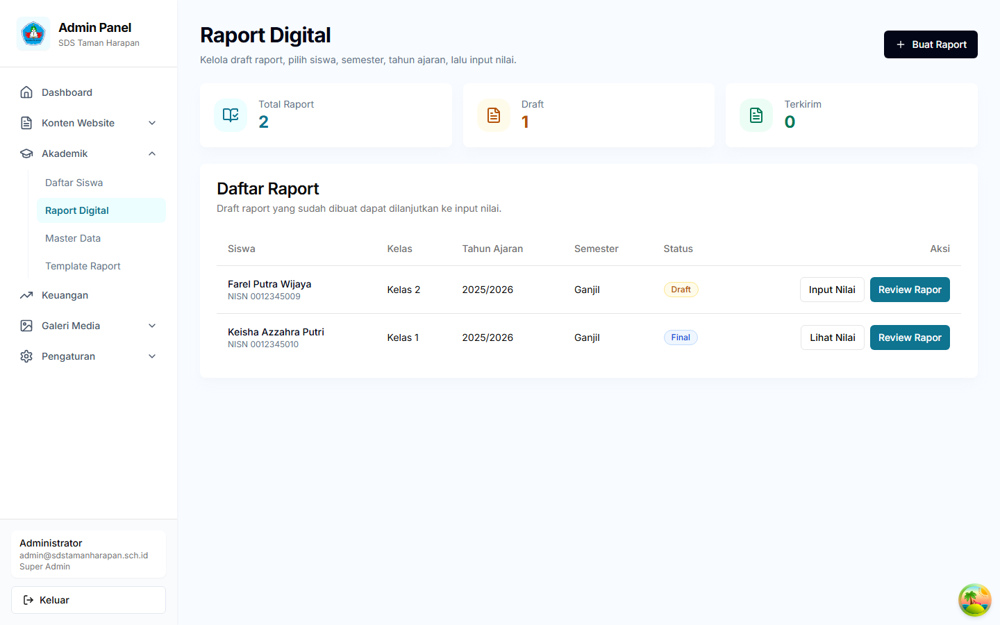
Gambar: Halaman Daftar Rapor Digital Siswa
📌 Petunjuk Elemen:
- Tombol "Buat Rapor" — Klik untuk membuat rapor baru untuk seorang siswa
- Filter Tahun Akademik & Semester — Pilih untuk memfilter daftar rapor
- Daftar Rapor — Tabel berisi nama siswa, kelas, semester, dan status (Draft/Final)
- Tombol "Edit" — Klik untuk membuka form pengisian nilai rapor
- Tombol "Preview" — Klik untuk melihat preview rapor dalam format PDF
- Tombol "Hapus" — Klik untuk menghapus rapor yang masih berstatus Draft
Prasyarat Membuat Rapor:
⚠️ Pastikan Sudah Ada:
- Data siswa yang aktif
- Mata pelajaran yang sudah dikonfigurasi (di Master Data)
- Template rapor yang aktif (di Template Rapor)
- Tahun akademik yang aktif (di Master Data)
Cara Membuat Rapor:
- Klik menu Akademik → Rapor Digital
- Klik tombol "Buat Rapor"
- Pilih:
- Tahun akademik
- Semester (Ganjil/Genap)
- Kelas
- Siswa
- Klik "Buat"
Cara Mengisi Nilai:
- Di daftar rapor, klik tombol "Edit" pada rapor yang ingin diisi
- Isi nilai untuk setiap mata pelajaran (skala 0-100)
- Tambahkan catatan per mata pelajaran jika diperlukan
- Klik "Simpan" secara berkala
Fitur AI (Kecerdasan Buatan):
✨ AI-Powered Features
- Generate Catatan Wali Kelas: AI akan membuat catatan apresiatif berdasarkan nilai siswa
- Analisa Fokus Belajar: AI mengidentifikasi mata pelajaran yang perlu perhatian khusus
- Rekomendasi Strategi: Saran konkret untuk peningkatan prestasi
Cara Menggunakan: Setelah mengisi minimal 50% nilai, klik tombol "Generate AI" di bagian Catatan Wali Kelas.
Preview dan Finalisasi:
- Setelah semua nilai terisi, klik tombol "Preview"
- Lihat preview rapor dalam format PDF
- Di sidebar kanan, Anda dapat:
- Melihat statistik nilai (rata-rata, mata pelajaran terbaik/terlemah)
- Melihat analisa AI untuk fokus belajar
- Mengedit catatan wali kelas
- Jika sudah yakin, klik "Finalisasi" untuk mengunci rapor
⚠️ Peringatan
Setelah difinalisasi, rapor tidak dapat diedit lagi. Pastikan semua data sudah benar sebelum finalisasi.
5.3 Master Data
Kelola data referensi yang digunakan di seluruh sistem.
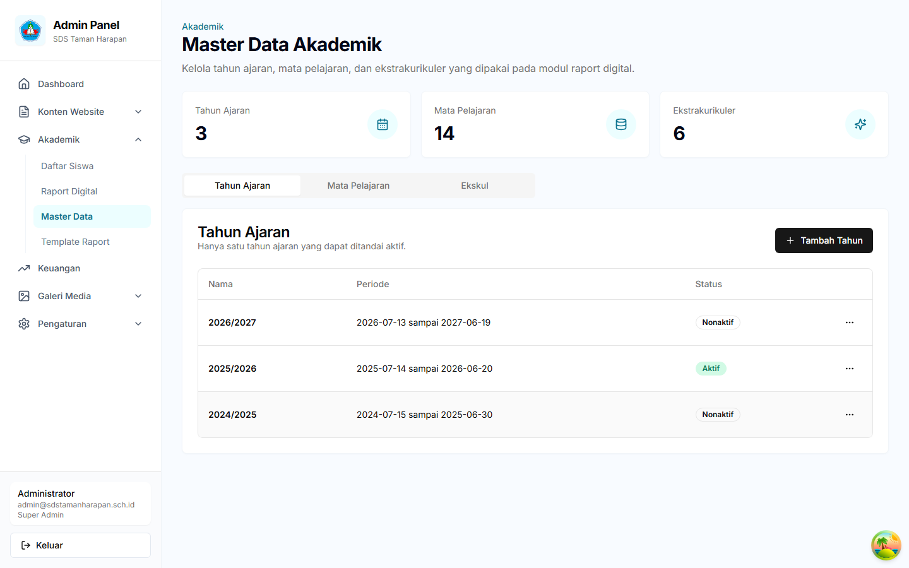
Gambar: Halaman Master Data — Tahun Akademik, Mata Pelajaran, Ekstrakurikuler, Sub-Kelas
📌 Petunjuk Elemen:
- Tab "Tahun Akademik" — Klik untuk mengelola tahun akademik (aktif/nonaktif)
- Tab "Mata Pelajaran" — Klik untuk menambah/edit mata pelajaran dan urutannya
- Tab "Ekstrakurikuler" — Klik untuk mengelola kegiatan ekstrakurikuler
- Tab "Sub-Kelas" — Klik untuk mengelola pembagian kelas (contoh: 1A, 2B, atau Kelas 1 tanpa seksi)
- Tombol Tambah (+) — Tersedia di setiap tab untuk menambah data baru
Tab yang Tersedia:
A. Tahun Akademik
- Tambah tahun akademik baru (contoh: "2025/2026")
- Set tahun akademik aktif
- Atur tanggal mulai dan selesai
B. Mata Pelajaran
- Tambah mata pelajaran baru
- Atur kode mata pelajaran
- Kategorikan (Wajib, Pilihan, Muatan Lokal)
- Atur urutan tampilan di rapor
C. Ekstrakurikuler
- Tambah kegiatan ekstrakurikuler
- Atur nama dan deskripsi
- Atur urutan tampilan
D. Sub-Kelas
Kelola pembagian kelas per tingkat. Setiap kelas dapat memiliki seksi (misalnya 1A, 1B) atau tanpa seksi untuk sekolah dengan satu kelas per tingkat.
- Tambah Sub-Kelas: Klik tombol "Tambah Kelas" di pojok kanan atas tab Sub-Kelas
- Field yang tersedia:
- Nama Kelas (wajib) — contoh: "Kelas 1A" atau "Kelas 1"
- Tingkat (wajib) — pilih dari Kelas 1 sampai Kelas 6
- Seksi (opsional) — huruf A/B/C/D, atau "Tidak Ada" jika hanya satu kelas per tingkat
- Tahun Ajaran — hubungkan ke tahun ajaran yang aktif
- Wali Kelas — nama wali kelas (opsional)
- Kapasitas — jumlah maksimal siswa per kelas
- Status Aktif — nonaktifkan kelas yang sudah tidak digunakan
- Edit/Hapus: Klik ikon tiga titik pada baris kelas untuk mengedit atau menghapus
💡 Tips
Sub-kelas yang dibuat di sini akan otomatis muncul sebagai pilihan di form tambah/edit siswa dan filter kelas di halaman Daftar Siswa. Pastikan setiap siswa di-assign ke sub-kelas yang benar.
5.4 Template Rapor
Kelola template rapor yang menentukan layout dan komponen rapor PDF.
Fitur:
- Buat Template: Upload file template rapor
- Konfigurasi: Atur komponen yang ditampilkan
- Preview: Lihat hasil template
- Aktifkan: Set template sebagai template aktif
ℹ️ Catatan
Hanya satu template yang dapat aktif pada satu waktu. Template aktif akan digunakan untuk semua rapor baru yang dibuat.
5.5 Ranking Siswa
Lihat peringkat siswa berdasarkan rata-rata nilai rapor per kelas, semester, dan tahun ajaran. Ranking dihitung secara otomatis dari nilai rapor yang sudah diinput.
Mengakses Ranking Siswa:
- Buka menu Akademik di sidebar, lalu klik Ranking Siswa
- Halaman ranking akan menampilkan daftar peringkat siswa yang dikelompokkan per kelas
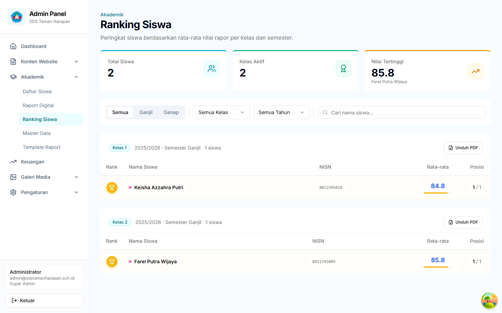
Gambar: Halaman Ranking Siswa — Filter, Tabel Peringkat, dan Unduh PDF
Fitur Filter:
📌 Petunjuk Elemen:
- Tombol Semester — Toggle berbentuk pill untuk memilih Semua, Ganjil, atau Genap
- Filter Kelas — Dropdown untuk memilih kelas tertentu atau semua kelas
- Filter Tahun Ajaran — Dropdown untuk memilih tahun ajaran
- Kolom Pencarian — Cari siswa berdasarkan nama secara real-time
- Chip Filter Aktif — Menampilkan filter yang sedang aktif, klik untuk menghapus filter
Tampilan Ranking:
- Kartu Statistik: Total siswa ter-rank, jumlah kelas aktif, dan nilai tertinggi
- Podium Juara: Saat memfilter satu kelas tertentu, tiga siswa terbaik ditampilkan dalam format podium (Juara 1, 2, dan 3)
- Tabel Ranking: Menampilkan posisi, nama siswa, NISN, rata-rata nilai dengan progress bar, dan posisi dari total siswa
- Indikator Visual: Warna skor berubah berdasarkan nilai — hijau (90+), biru (80+), kuning (70+), merah (di bawah 70)
- Unduh PDF: Tombol "Unduh PDF" di setiap kartu kelas untuk mengunduh ranking kelas tersebut dalam format PDF
- Paginasi: Jika jumlah siswa lebih dari 10 per kelas, navigasi halaman akan muncul di bagian bawah tabel
💡 Tips
Ranking juga muncul di halaman Preview Rapor siswa. Pada kartu statistik di sebelah kanan, Anda dapat melihat badge ranking siswa tersebut di kelasnya. Ini memudahkan wali kelas untuk melihat posisi siswa tanpa harus membuka halaman Ranking Siswa secara terpisah.
⚠️ Perhatian
Ranking dihitung berdasarkan rata-rata dari nilai pengetahuan dan keterampilan semua mata pelajaran. Pastikan semua nilai sudah diinput dengan benar sebelum menggunakan ranking sebagai acuan. Data ranking akan otomatis terupdate setiap kali nilai rapor diubah.
6. Manajemen Keuangan
Kelola invoice SPP dan analisis proyeksi cash flow sekolah.
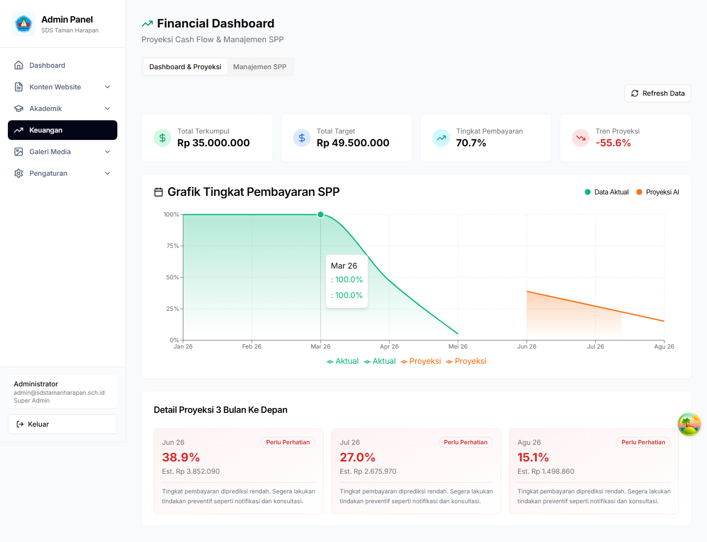
Gambar: Halaman Financial Dashboard — Proyeksi Cash Flow
📌 Petunjuk Elemen:
- Tab "Dashboard & Proyeksi" — Tab aktif menampilkan analisis keuangan berbasis AI
- Tab "Manajemen SPP" — Klik untuk beralih ke manajemen invoice SPP
- Kartu Metrik (atas) — Total Terkumpul, Total Target, Tingkat Pembayaran (%), dan Tren Proyeksi
- Grafik Pembayaran — Garis hijau = data aktual, garis oranye = proyeksi AI. Menunjukkan tren pembayaran dari waktu ke waktu
- Detail Proyeksi (bawah) — 3 kartu prediksi 3 bulan ke depan dengan tingkat kepercayaan dan estimasi nominal
- Tombol "Refresh Data" — Klik untuk memperbarui data dan analisis AI
Tab Dashboard & Proyeksi
Tab ini menampilkan analisis keuangan berbasis AI.
Informasi yang Ditampilkan:
- Total Terkumpul: Jumlah pembayaran SPP yang sudah diterima
- Total Target: Target pembayaran yang diharapkan
- Tingkat Pembayaran: Persentase siswa yang sudah membayar
- Tren Proyeksi: Prediksi tren pembayaran ke depan
- Grafik Pembayaran: Visualisasi data aktual vs proyeksi AI
- Detail Proyeksi: Prediksi 3 bulan ke depan dengan tingkat kepercayaan
Cara Refresh Data:
- Klik tombol "Refresh Data" di pojok kanan atas
- Tunggu proses analisis selesai (beberapa detik)
- Data akan diperbarui dengan informasi terbaru
Tab Manajemen SPP
Kelola invoice SPP siswa secara manual.
Fitur:
- Daftar Invoice: Lihat semua invoice dengan filter status
- Tambah Invoice: Buat invoice baru untuk siswa
- Edit Invoice: Ubah jumlah, jatuh tempo, atau status
- Hapus Invoice: Hapus invoice yang salah
- Filter & Cari: Filter berdasarkan status dan cari berdasarkan nama/keterangan
Cara Membuat Invoice:
- Klik tab "Manajemen SPP"
- Klik tombol "Tambah Invoice"
- Isi form:
- Siswa: Pilih siswa dari dropdown
- Jumlah: Nominal tagihan (contoh: 500000)
- Jatuh Tempo: Tanggal jatuh tempo
- Keterangan: Deskripsi (contoh: "SPP Bulanan")
- Status: Pending, Lunas, atau Terlambat
- Klik "Tambah Invoice"
⚠️ Perhatian
Jika tidak ada siswa aktif, tombol "Tambah Invoice" akan dinonaktifkan. Tambahkan siswa terlebih dahulu di menu Akademik → Daftar Siswa.
Status Invoice:
- Pending: Invoice belum dibayar (warna kuning)
- Lunas: Invoice sudah dibayar (warna hijau)
- Terlambat: Invoice melewati jatuh tempo (warna merah)
7. Galeri Media
Kelola dokumentasi foto dan video kegiatan sekolah.
7.1 Foto
Upload dan kelola foto-foto kegiatan sekolah.
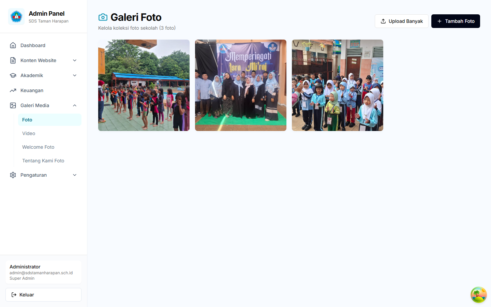
Gambar: Halaman Galeri Foto Kegiatan Sekolah
📌 Petunjuk Elemen:
- Tombol "Upload Foto" — Klik untuk mengunggah foto baru dari komputer
- Grid Foto — Tampilan thumbnail semua foto yang telah diunggah
- Caption Foto — Teks keterangan yang muncul di bawah setiap foto
- Tombol Edit (ikon pensil) — Klik untuk mengubah caption atau urutan foto
- Tombol Hapus (ikon tong sampah) — Klik untuk menghapus foto dari galeri
Cara Upload Foto:
- Klik menu Galeri Media → Foto
- Klik tombol "Upload Foto"
- Pilih file foto (format: JPG, PNG, WebP)
- Isi caption/keterangan foto
- Atur urutan tampilan jika diperlukan
- Klik "Simpan"
Tips Upload Foto:
- Gunakan foto dengan resolusi minimal 800x600 pixel
- Ukuran file maksimal 2MB per foto
- Beri caption yang deskriptif untuk SEO
- Atur urutan untuk menampilkan foto terbaik di awal
7.2 Video
Kelola video kegiatan sekolah (embed dari YouTube/Vimeo).
Cara Tambah Video:
- Klik menu Galeri Media → Video
- Klik tombol "Tambah Video"
- Masukkan URL video (YouTube atau Vimeo)
- Isi judul dan deskripsi
- Klik "Simpan"
7.3 Galeri Khusus
Sistem juga menyediakan galeri khusus untuk halaman tertentu:
- Welcome Foto: Foto untuk halaman beranda
- Tentang Kami Foto: Foto untuk halaman tentang kami
8. Pengaturan
Kelola pengaturan sistem dan manajemen pengguna.
8.1 Profil Sekolah
Kelola identitas sekolah yang digunakan di seluruh sistem.
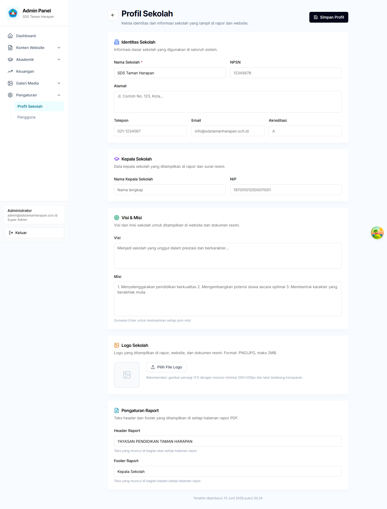
Gambar: Halaman Pengaturan Profil Sekolah
📌 Petunjuk Elemen:
- Identitas Sekolah — Isi nama sekolah, NPSN, alamat, telepon, email, dan akreditasi
- Kepala Sekolah — Isi nama dan NIP kepala sekolah (ditampilkan di rapor)
- Visi & Misi — Tulis visi dan misi sekolah untuk website dan dokumen resmi
- Logo Sekolah — Klik "Pilih File Logo" untuk upload logo (PNG/JPG, maks 2MB)
- Pengaturan Raport — Atur teks header dan footer yang muncul di setiap halaman rapor PDF
- Tombol "Simpan Profil" (kanan atas) — Klik untuk menyimpan semua perubahan
Informasi yang Dikelola:
- Identitas Sekolah:
- Nama sekolah
- NPSN (Nomor Pokok Sekolah Nasional)
- Alamat lengkap
- Nomor telepon
- Akreditasi
- Kepala Sekolah:
- Nama kepala sekolah
- NIP (Nomor Induk Pegawai)
- Visi & Misi: Visi dan misi sekolah
- Logo Sekolah: Upload logo sekolah
- Pengaturan Rapor:
- Header rapor (teks di atas setiap halaman)
- Footer rapor (teks di bawah setiap halaman)
Cara Mengedit Profil:
- Klik menu Pengaturan → Profil Sekolah
- Isi atau ubah informasi pada form
- Untuk upload logo, klik tombol "Pilih File Logo"
- Klik "Simpan Profil" di pojok kanan atas
💡 Tips
Logo yang direkomendasikan: format PNG dengan latar transparan, ukuran minimal 200x200 pixel, rasio 1:1 (persegi).
8.2 Pengguna (User Management)
Kelola akun pengguna sistem (khusus Super Admin dan Admin).
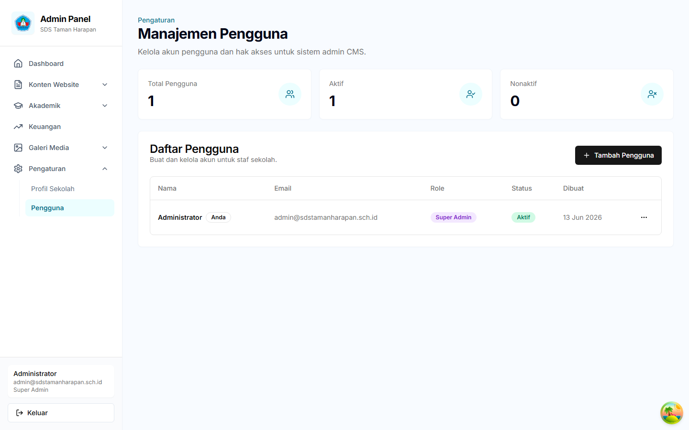
Gambar: Halaman Manajemen Pengguna
📌 Petunjuk Elemen:
- Tombol "+ Tambah Pengguna" — Klik untuk membuat akun pengguna baru
- Daftar Pengguna — Tabel berisi nama, email, peran (Super Admin/Admin/Editor/Viewer), dan status aktif
- Badge Peran — Warna berbeda untuk setiap peran (ungu = Super Admin, biru = Admin, dll)
- Tombol Edit (ikon pensil) — Ubah data pengguna, peran, atau reset password
- Tombol Hapus (ikon tong sampah) — Nonaktifkan akun pengguna
Fitur:
- Daftar Pengguna: Lihat semua pengguna sistem
- Tambah Pengguna: Buat akun baru
- Edit Pengguna: Ubah data atau peran pengguna
- Nonaktifkan Pengguna: Nonaktifkan akun tanpa menghapus
- Reset Password: Reset password pengguna
Cara Menambah Pengguna:
- Klik menu Pengaturan → Pengguna
- Klik tombol "Tambah Pengguna"
- Isi form:
- Email: Email pengguna (harus unik)
- Password: Password minimal 6 karakter
- Nama Lengkap: Nama pengguna
- Peran: Super Admin, Admin, Editor, atau Viewer
- Klik "Simpan"
Peran Pengguna:
🔐 Level Akses
- Super Admin: Akses penuh termasuk manajemen pengguna
- Admin: Akses ke semua fitur operasional
- Editor: Dapat mengedit konten dan data
- Viewer: Hanya dapat melihat data
⚠️ Perhatian
Jangan nonaktifkan akun Anda sendiri. Sistem akan memblokir upaya menonaktifkan akun yang sedang digunakan.
9. Tips dan Praktik Terbaik
Keamanan Akun
- Gunakan password yang kuat (minimal 8 karakter, kombinasi huruf, angka, dan simbol)
- Jangan bagikan kredensial login kepada orang lain
- Selalu logout setelah selesai menggunakan sistem
- Gunakan browser yang up-to-date untuk keamanan terbaik
Pengelolaan Konten
- Review konten sebelum mempublikasikan ke website
- Gunakan gambar dengan ukuran yang sesuai (tidak terlalu besar)
- Beri caption yang deskriptif untuk foto dan video
- Update berita secara berkala untuk menjaga website tetap fresh
Pengelolaan Data Siswa
- Verifikasi data siswa sebelum menyimpan
- Gunakan fitur import dari PPDB untuk efisiensi
- Nonaktifkan siswa yang sudah lulus atau pindah (jangan hapus)
- Backup data secara berkala (export ke Excel)
Pengelolaan Rapor
- Isi nilai secara bertahap dan simpan secara berkala
- Gunakan fitur AI untuk membantu membuat catatan wali kelas
- Preview rapor sebelum finalisasi untuk memastikan tidak ada kesalahan
- Finalisasi rapor hanya setelah semua data diverifikasi
Pengelolaan Keuangan
- Buat invoice SPP di awal bulan
- Update status pembayaran segera setelah menerima pembayaran
- Monitor invoice yang terlambat dan follow up ke orang tua
- Gunakan proyeksi AI untuk perencanaan keuangan
Performa Sistem
- Gunakan koneksi internet yang stabil
- Clear cache browser jika mengalami masalah tampilan
- Refresh halaman jika data tidak muncul
- Hubungi administrator jika menemukan bug atau error
✨ Kesimpulan
Sistem CMS ini dirancang untuk memudahkan pengelolaan sekolah secara digital. Dengan mengikuti panduan ini, Anda dapat memanfaatkan semua fitur secara optimal. Jika ada pertanyaan atau kendala, jangan ragu untuk menghubungi administrator sistem.